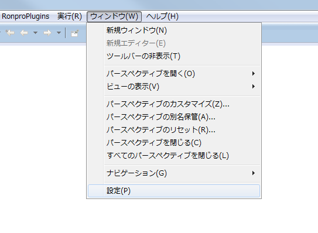
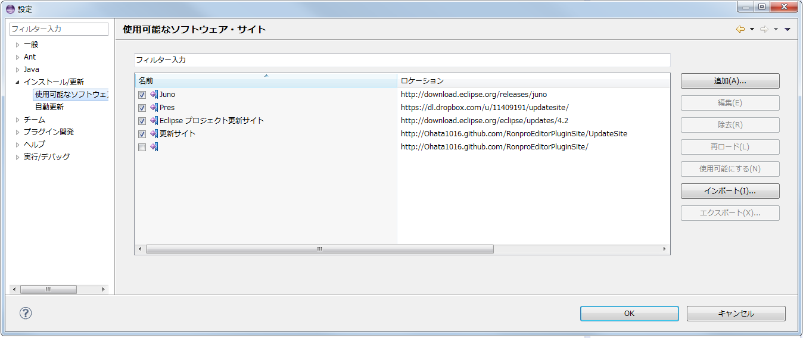
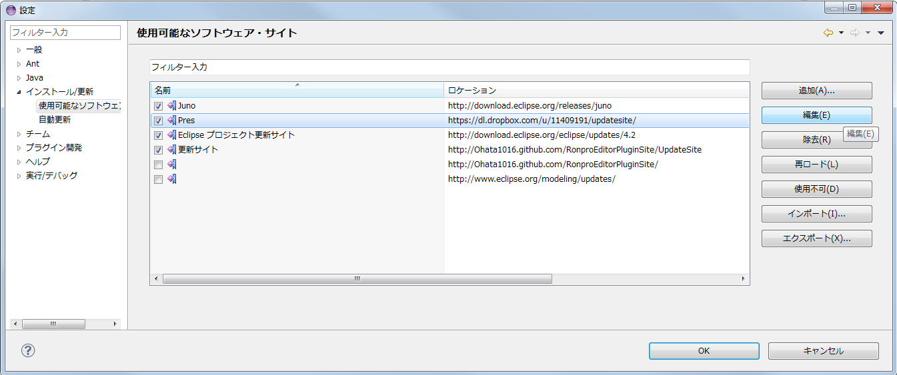

このページではRonproPlugin2.1.0の変更点と，アップデート方法を説明します．
Eclipseを起動して，ツールバーのウィンドウから設定をクリックしてください

インストール/更新をクリックして，利用可能なソフトウェアをクリックしてください．

Presを選択状態にし，編集をクリックしてください．名前とロケーションが表示されるので，ロケーションに「 http://ohata1016.github.io/PresPluginUpdateSite/PresUpdateSite/ 」，または「 http://hirao0525.github.io/PresPluginUpdateSiteMirror/PresUpdateSiteMirror/ 」を入力してください．

eclipseのメニューバーのヘルプをクリックし，更新の確認をクリックします． 前回同様にここからプラグインを更新して，eclipseを再起動してください．
eclipseのメニューバーのヘルプをクリックし，EclipseSDKについてをクリックします．「Eclipse SDKについて」というウィンドウが出たら，インストール詳細をクリックしてください．
インストール済みのソフトウェアの中に，RonproEditorPlugin2.1.0, PresPlugin3.7.3があることを確認して下さい．確認ができたら確認ができたらTAを呼んでチェックを受けてください．お疲れ様でした．